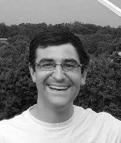

CCR Collaborators
| Name and Biography |
|---|

Karim AlizadResearch Assistant Professor, Belle W. Baruch Institute for Marine and Coastal Sciences, University of South Carolina Karim Alizad is a Research Assistant Professor in the Baruch Institute for Marine and Coastal Sciences at the University of South Carolina with an interdisciplinary background in civil engineering, mechanical engineering, and energy conversion. He has experience in hydroecological modeling, hydrodynamic simulation, Computational Fluid Dynamics, and heat transfer. His research focused on assessing sea level rise and climate change effects on wetlands by coupling hydrodynamic and ecological models. |

John AtkinsonComputational Fluids Dynamicist, ARCADIS Dr. Atkinson works for Arcadis where he specializes in coastal hydrodynamics, storm impacts, erosion, and the impact of sea level rise and urban development on coastal flooding. In Louisiana, he has provided scientific support for federal and state agencies, levee districts, and the private sector. Dr. Atkinson is actively involved in ongoing research sponsored by the Department of Homeland Security to improve flood modeling methodologies, specifically improving accuracy in transitional areas between the coast and inland. |

Peter BacopoulosResearch Scientist, LSU Center for Coastal Relisiency Life-long Floridian, a twin (brother-brother), schooled and trained at UCF (BS, MS, PhD and post-doc), with professional experience in academia (UNF), regulation (FDEP) and consulting (independent). Expertise is with astronomic tides and storm surge, particularly as relating to estuarine hydrodynamics, salinity transport and coastal biology, and numerical modeling (ADCIRC, DG-SWEM and other codes) with high-performance computing systems. |

Samuel BentleyVice President for the Office of Research & Economic Development, Professor and Billy and Ann Harrison Chair in Sedimentary Geology, LSU Geology and Geophysics. Sam Bentley holds a PhD in Coastal Oceanography from SUNY Stony Brook and has held the Harrison Chair in Sedimentary Geology at Louisiana State University since 2011, prior to which he held the Canada Research Chair in Seabed Processes at Memorial University of Newfoundland. He research focuses on coastal and marine sedimentary geology, especially the use of radioisotope geochronology to study sedimentary processes and seabed morphodynamics. |

Matthew V. BilskieAssistant Professor, School of Environmental, Civil, Agricultural, and Mechanical Engineering, University of Georgia Dr. Matthew V. Bilskie is an Assistant Professor in the School of Environmental, Civil, Agricultural, and Mechanical Engineering at the University of Georgia. Dr. Bilskie holds a BS and MS degree in Civil Engineering from the University of Central Florida and a PhD in Civil Engineering from Louisiana State University. His research interests include unstructured finite element mesh development for use in hurricane storm surge models, coastal inundation in a changing climate, and quantifying the combined effects of coastal and rainfall runoff inundation. |
Traci BirchInterim Managing Director of the LSU Coastal Sustainability Studio & Assistant Professor, LSU School of Architecture Traci Birch is the Managing Director of the LSU Coastal Sustainability Studio. Her particular focus is ecosystem management and facilitating local implementation of regional planning efforts. Traci completed her Master’s in Urban and Regional Planning (2003) and her Ph.D. in Urban Studies and Environmental Management (2011), both from the University of New Orleans. She also holds a Bachelor’s of Arts degree with concentrations in graphic design and media production from Baldwin-Wallace University (1995). Before joining CSS, Traci spent 10-years+ in the private sector as a practicing planner in Louisiana and the Gulf South. Her teaching experience includes graduate and undergraduate studios and seminars in coastal, sustainability, and environmental planning. She has previously taught at East Carolina University and the University of New Orleans. Traci is also a member of the American Institute of Certified Planners and the American Planning Association. |

DeWitt BraudAcademic Area Coordinator, LSU Coastal Studies Institute DeWitt Braud has Geography degrees from LSU (BS) and Michigan State (MS). He has worked with The LSU Division of Engineering Research, Dept. of Geography & Anthropology, and Coastal Studies Institute in remote sensing, GIS, and spatial analysis for a combined total of over 30 years. |

Christine BuckelEcologist, NOAA National Ocean Service / National Centers for Coastal Ocean Science Christine Buckel has been a member of the National Oceanic and Atmospheric Administration's National Centers for Coastal Ocean Science since 2001. She is an ecologist and examines geospatial relationships of species and habitats in the marine environment. Most recently she has been examining these relationships and human interactions under future conditions with sea level rise. She has degrees from University of Nebraska (BS) and the University of California, Santa Barbara (MS). |

John CallawayProfessor, University of San Francisco John Callaway received his PhD in Oceanography and Coastal Sciences from Louisiana State University in 1994. Prior to his position at USF, John was the Associate Director of the Pacific Estuarine Research Laboratory (PERL) at San Diego State University. At USF, Professor teaches undergraduate and graduate courses in introductory environmental science, applied ecology, wetlands, and restoration ecology. His research expertise is in wetland restoration, specifically wetland plant ecology and sediment dynamics. Recent research projects focus on the development of restored wetlands, including evaluations of the importance of plant species diversity and the role of physical heterogeneity in the development of ecosystem functions. His research includes projects in San Francisco Bay and Tijuana Estuary. This work has been funded by the National Science Foundation, the Environmental Protection Agency, California Sea Grant, and other agencies. Prof. Callaway is on Academic Leave for the Fall 2017 semester to be the Lead Scientist for the Delta Science Program.
|

Jeff CarneyAssociate Professor, Associate Director FIBER Jeffrey Carney, AIA, AICP is an architect and urban designer working at the University of Florida, School of Architecture as Associate Professor, and as Associate Director of the Florida Institute for Built Environment Resilience (FIBER). Jeff received his BA from Washington University in St. Louis and master’s degrees in both architecture and city and regional planning from the University of California, Berkeley where he received the Branner Fellowship to study urbanism in locations around the world. |

Zachary CobellResearch Engineer, The Water Institute of the Gulf Zach Cobell is a Research Engineer with the Institute’s natural systems modeling group. Cobell graduated with a degree in civil engineering and environmental engineering from the University of Notre Dame in 2010. During his time at Notre Dame, he traveled to New Orleans in the wake of Hurricane Katrina and toured areas impacted by the storm. From that experience, he developed an interest in the numerical modeling of hurricane events and began conducting research in the university’s Computational Hydraulics Lab under Dr. Joannes Westerink. Since graduating, Cobell has helped lead numerical modeling studies throughout the United States, including the storm surge and wave analysis for both the 2012 and 2017 Louisiana Coastal Master Plans. He has also worked extensively on optimization of numerical models in high performance computing environments and serves as a key member of the ADCIRC Model Development Group. At the Institute, his research focuses on coastal and riverine processes, hurricane driven storm surge, and waves, and coastal storm surge forecast applications. |

David Coggin, PresidentMarea Technology |

Renee ColliniCoordinator, Northern Gulf of Mexico Sentinel Site Cooperative/DISL/MASGC Focused on sea-level rise, Collini works throughout the northern Gulf to facilitate the flow of information between researchers and decision-makers to improve science application. She has expertise in stakeholder engagement, science communication, project management and coordination, and meeting development and facilitation. |

Andrew CoxPresident, Oceanweather, Inc. Andrew Cox is the President of Oceanweather Inc. based in Stamford, Connecticut. He has been actively engaged in research and commercial projects in the areas of tropical meteorology, ocean wave modeling, remote sensing, and in the generation of long-term wind and wave climatologies for operability and structure design |
Rosemary CyriacWater Resources Engineer, Atkins, member of the SNC-Lavalin Group Rosemary Cyriac is a Water Resources Engineer at Atkins, where she is mainly involved in building computer models for hydrology and hydraulic analysis, assisting in coastal engineering projects and applying geospatial programming techniques for packaging deliverables. She graduated with a PhD in Civil Engineering from North Carolina State University in December 2018 and during her PhD she worked on developing and applying numerical models to study coastal processes such as storm-induced flooding and density-driven surface transport in the coastal ocean. |

Denise DeLormeProfessor, LSU Dept. of Environmental Sciences Dr. Denise E. DeLorme, a Professor in the Department of Environmental Sciences at Louisiana State University, is a social scientist with a communications background and specialization in qualitative methods. Denise collaborates with interdisciplinary research teams on projects such as planning for sea level rise impacts and focuses on science communication, stakeholder engagement, and community outreach. |

Douglas EdmondsAssociate Professor of Geological Sciences, Sedimentology; Malcolm and Sylvia Boyce Chair in Geological Sciences, Indiana University Douglas Edmonds research focuses on the sedimentology, stratigraphy, and geomorphology of depositional sedimentary systems. Example projects and scales of interest range from: secondary circulation and turbulence to formation of reach-scale features such as levees, to whole system behavior of deltas and river belts. He uses a combination of mathematical modeling, field observation, and occasionally experimentation to understand these systems. His research is generally directed toward understanding the coupled surficial and sedimentological evolution of these systems. |

Jason FlemingChief Engineer, Seahorse Coastal Consulting Over the last fifteen years, Jason Fleming's role as the development coordinator for ADCIRC has given him the opportunity to work on every part of the code. He has developed key ADCIRC features, including the symmetric vortex tropical cyclone model, HWind support, and native netCDF and XDMF output. Jason is also the Lead Developer and Operator for the ADCIRC Surge Guidance System (ASGS), a software automation system for ADCIRC. Jason also founded the ADCIRC Boot Camp, a three day training event for newcomers to the ADCIRC Community, held in conjunction with the ADCIRC Users Group Meeting each year. |

Madeline Foster-MartinezResearch Associate, University of New Orleans, Pontchartrain Institute for Environmental Sciences Madeline Foster-Martinez is a research associate at the UNO Pontchartrain Institute for Environmental Sciences. Her current research focuses on understanding wave attenuation through coastal marshes to inform coastal protection strategies. Other research interests include preparing for accelerated sea-level rise, marsh creation, and engineering outreach. Dr. Foster-Martinez was previously a postdoctoral researcher at LSU CCR. She received her PhD from UC Berkeley, where she was a part of the Environmental Fluid Mechanics research group and an NSF intern with the U.S. Geological Survey. |

Peter GoodwinProfessor and President, University of Maryland Center for Environmental Science |

Scott C. HagenProfessor & Director, LSU Center for Coastal Resiliency; Louisiana Sea Grant Laborde Chair Scott Hagen has authored more than 85 peer-reviewed journal articles with focus on
massively parallel, high performance computational modeling of ocean, coastal, and
inland astronomical and meteorological tides and flows. His more recent efforts expand
into transport and biological modeling with respect to the coastal dynamics of sea
level rise in general and salt marsh impacts in particular. Scott and his students
are conducting scientific research that is applied through |

Liz HollingworthProfessor, University of Iowa Professor Hollingworth is a faculty member in the College of Education at the University of Iowa in the Educational Policy and Leadership Studies Department. She currently serves as the Program Coordinator for Educational Leadership. Her research focuses on issues of leadership and assessment: in particular, how school reform policies affect classroom practice, evaluation, and school administration. Dr. Hollingworth has served as the Director of the Center for Evaluation and Assessment since 2015, working with a team of staff and graduate students to conduct multiple forms of program evaluation in collaboration with colleges, universities, and school systems. |

Jin IkedaPostdoctoral Researcher, LSU Center for Coastal Resiliency Jin Ikeda is a postdoctoral researcher at the Louisiana State University Center for Coastal Resiliency. Ikeda attained a PhD in Civil Engineering from the University of Texas at San Antonio. He has research experiences in hydrodynamic and morphological simulation and laboratory experiments of sediment dynamics. His current research interest is sea-level rise and climate change effects on wetlands. |

Jennifer IrishProfessor, Virginia Tech Civil and Environmental Engineering Jennifer Irish is a professor of coastal engineering at Virginia Tech with over 20 years of experience and more than 50 peer-reviewed journal papers. Irish’s research is motivated by the societal need to improve and protect coastal infrastructure. Irish is an expert in storm surge dynamics, probabilistic coastal hazard assessment, and nature-based infrastructure for coastal hazard mitigation. Established within the international and national coastal engineering communities, Irish is a Fellow of the American Society of Civil Engineers (ASCE) and a member of the Coastal Engineering Research Council of ASCE. She served as chair of ASCE’s Committee on Technical Advancement from 2016-2017 and as Secretary of ASCE’s Coasts, Oceans, Ports, and Rivers Institute Board of Governors from 2008-2012. |

Navid JafariAssistant Professor, LSU Civil & Environmental Engineering Navid Jafari is an assistant professor in the Department of Civil & Environmental Engineering at LSU, where his research is focused on geotechnical and geoenvironmental engineering. His research involves understanding the behavior and performance of coastal protection and restoration infrastructure, including levees, floodwalls, and natural and nature-based systems, to natural hazards. |

Carola KaiserResearch Scientist & GIS specialist, LSU Center for Computation & Technology Carola Kaiser is an IT consultant at the LSU Center for Computation and Technology. She has been the lead software and web developer of the Coastal Emergency Risks Assessment (CERA) storm surge visualization tool (http://coastalemergency.org ). Carola’s primary focus is set on the development of Internet-based spatial frameworks and web applications that link modelling tools, monitoring, and sophisticated IT techniques to support storm surge forecasts along the coasts of the U.S. The CERA visualization technology has been intensely and successfully used by emergency managers and federal U.S agencies during severe hurricane events like Hurricanes Gustav, Ike, and Isaac in the Gulf of Mexico and Hurricanes Irene and Sandy along the U.S. east coast. It was also used as an effective real-time tool during the BP Deepwater Horizon Oil Spill in 2010. |
Amin KargarianAssistant Professor, LSU Electrical & Computer Engineering Amin Kargarian is an assistant professor at LSU in the Electrical & Computer Engineering Department. His research interests include power and energy systems optimization, distributed optimization, applications of machine learning to power and energy systems, and power system resilience. |

Kory KonsoerAssociate Professor, LSU Geography and Anthropology Kory Konsoer’s research interests are primarily focused on the morphodynamics of channelized flows, with emphasis on field studies examining the complex interactions between turbulent flow fields, sediment transport, and channel form. His research within this area has focused specifically on interactions between channel curvature, bed morphology, and flow structure in meandering rivers with complex platform geometry, the influence of vegetation on turbulence and bank erosion, morphodynamics of neck cutoffs on meandering rivers, flow turbulence along the shear layer/mixing interface at channel confluences, hillslope-channel coupling and sediment routing in high gradient streams, and hydraulic geometry analysis of channelized flows by comparing fluvial, submarine, and extraterrestrial environments. |

Ethan KubatkoAssociate Professor, The Ohio State University Dr. Kubatko is an Associate Professor in the Department of Civil, Environmental and Geodetic Engineering at The Ohio State University. His primary research interests are in the development, implementation, analysis and application of computational models for fluid flow and transport processes. Dr. Ethan Kubatko, whose main area of interest is in computational fluid dynamics (CFD), has recently involved himself in the development of a computational tool that will be used to help analyze and assess possible damage from the Deepwater Horizon oil spill along the U.S. Eastern Coast. |

Nina S. LamProfessor & Abraham Distinguished Professor of Louisiana Environmental Studies, LSU Department of Environmental Sciences Nina Lam is Professor and E. L. Abraham Distinguished Professor of Louisiana Environmental Studies in the Department of Environmental Sciences at Louisiana State University. Her research interests are in GIS, remote sensing, spatial analysis, health and resilience. |

Rick LuettichProfessor and Director, UNC Institute of Marine Sciences / DHS Coastal Resilience COE Rick Luettich has civil engineering degrees from Georgia Tech (Bachelors, MS) and MIT (ScD) and has been a member of the Marine Sciences faculty of the University of North Carolina at Chapel Hill since 1986. He is a leader in coastal hazards modeling, developing the ADCIRC coastal circulation and storm surge model and leading the Department of Homeland Security’s Coastal Resilience Center of Excellence at UNC Chapel Hill. |

Giulio MarriotiAssistant Professor, LSU Department of Oceanography & Coastal Sciences Giulio Marrioti's research focuses on the processes that shape coastal environments. He is interested in coupling physical and biochemical aspects, e.g., ecogeomorphology and geobiology. He carries forward his research using mathematical models, laboratory experiments, and field work. His current agenda encompasses three main topics: 1) Wetland response to sea level rise, sediment supply, and storminess. 2) Coupled dynamics of sediment & biofilms / microbial-mats. 3) Carbonate platform sedimentary processes. |
Chris MasseyResearch Mathematician, US Army Corps of Eng., Eng. R&D Center, Coastal & Hydraulics Lab Chris Massey earned his PhD in mathematics from Virginia Tech and serves as a Research Mathematician at the US Army Corps of Engineers at the Engineer Research and Development Center’s Coastal and Hydraulics Laboratory since 2008. He is a recognized expert in the development and application of coastal and riverine numerical models, model coupling and system integration, and storm surge modeling. |

Stephen C. MedeirosAssistant Professor of Civil Engineering, Embry - Riddle Stephen Medeiros has Civil Engineering degrees from the Florida Institute of Technology (BS, MS) and the University of Central Florida (PhD) where he currently serves as a Lecturer in the Civil, Environmental and Construction Engineering Department. His research in Geospatial Data Fusion uses data science techniques to integrate laser scanning point clouds, satellite and UAV imagery, and field measurements in order to encode the environment for use in high performance computer models. |

Xuelian (Shelley) MengAssociate Professor, LSU Department of Geography & Anthropology Dr. Xuelian Meng is an assistant professor in the Department of Geography and Anthropology at Louisiana State University. Dr. Meng’s expertise and research interests focus on Remote sensing and GIS methodologies and applications of LiDAR, UAV, coastal morphology, wetland restoration, land-use/land-cover mapping, image processing and feature extraction. |

Paul MillerAssistant Professor, Department of Oceanography and Coastal Sciences, Louisiana State University Paul Miller is a coastal meteorologist with expertise in hydrometeorology. He joined the LSU faculty in 2019 where he supervises the Coastal Meteorology (COMET) Lab. |

James T. MorrisDistinguished Research Professor, University of South Carolina Dr. Morris is the director of the Belle W. Baruch Institute for Marine and Coastal Science and a professor at the University of South Carolina. His research spans the basic and applied aspects of the physiological ecology of plants adapted to wetland habitats and the biogeochemistry and systems ecology of wetlands, primarily salt and freshwater intertidal wetlands. |

Celalettin Emre OzdemirAssistant Professor, LSU Civil & Environmental Engineering Emre Ozdemir is an assistant professor at LSU in Civil & Environmental Engineering
and the Center for Computation and Technology. He is specialized in sediment transport
and boundary layer processes in coastal environment. |

Sandy Dokka ParfaitCoordinator, LSU Center for Coastal Resiliency Sandy Parfait Coordinates the day-to-day operations for the LSU Center for Coastal Resiliency. She is a graduate of LSU where she received a BFA. Sandy has a decade of experience in program management and event planning. |

Davina PasseriResearch Civil Engineer, USGS St. Petersburg Coastal and Marine Science Center Davina Passeri is a research scientist is at the USGS St. Petersburg Coastal and Marine Science Center. Her research concentrates on numerical modeling of coastal processes including tides, hurricane storm surge, sea level rise and barrier island morphology to understand the interactions between hydrodynamics and morphodynamics in response to short- and long-term drivers. |

R. Hampton PeeleResearch Associate 4, Louisiana Geological Survey R. Hampton Peele has three degrees from Louisiana State University, a BS in Geography, a BA in Anthropology, and a MNS (Natural Sciences). He has been a Mapping Scientist for the Louisiana Geological Survey at LSU for 20+ years, developing numerous GIS data layers and maps for Louisiana, the Gulf Coast, and beyond, and providing Hurricane Disaster Response Mapping Support to the Disaster Response Community. |

Nathaniel PlantActing Deputy for Science, USGS St. Petersburg Coastal and Marine Science Center Nathaniel Plant is a Research Oceanographer at the St. Petersburg Coastal and Marine Science Center. His research and applications focus on making statistically robust predictions of coastal response to storms and sea level rise. |

Tracy QuirkAssociate Professor, LSU Department of Oceanography and Coastal Sciences Tracy Quirk’s research focus is on plant and soil interactions in wetlands related to carbon and nutrient cycling. Her research integrates field, greenhouse, and laboratory studies to examine the influences of environmental factors, geomorphology, and restoration on plant species composition, productivity and soil carbon accumulation. She has managed over $1M in research funding and has coordinated regional wetland monitoring programs. |

Don ResioProfessor and Director, Taylor Engineering Research Institute, University of North Florida Donald T. Resio has extensive experience in coastal processes and risk statistics, having served for 17 years as the Senior Technologist for the Army Corps of Engineers Coastal Program at the Engineering Research and Development Center in Vicksburg, MS (1994-2011). He is currently the Director of the Taylor Engineering Research Institute at the University of North Florida. |

Hugh RobertsVice President for Engineering, The Water Institute of the Gulf Roberts earned his bachelor’s and master’s degrees in civil engineering from The University of Notre Dame. Through his career, Roberts has led numerical modeling based studies throughout Louisiana and the country to assess coastal and fluvial flood risks, support the design of ecosystem restoration and flood protection projects, and evaluate environmental impacts. He has played a leading role in recent studies in the Gulf Coast in support of the U.S. Army Corps of Engineers, Federal Emergency Management Agency, and the state of Louisiana’s Coastal Protection and Restoration Authority including the development of the 2012 and the 2017 Coastal Master Plans. |

Michael SalisburySenior Engineer II, Ports and Coastal Engineering Practice, Atkins Global Mike Salisbury graduated from the University of Central Florida with degrees in civil engineering (Bachelors, MS) and currently leads the coastal modeling group at Atkins North America. He has 13 years of experience working on coastal-related projects including expertise in developing storm surge models for risk assessment, floodplain mapping, and long-term climatology studies, and is currently Chair of the Coastal & Estuarine Hydroscience Committee for COPRI. |

Sonia StephensAssistant Professor, University of Central Florida Sonia Stephens is an assistant professor of technical communication in the English Department and Texts & Technology Program at the University of Central Florida. Her research includes developing tools to communicate about environmental risks and examining how visual communication technologies affect audiences’ understanding of science and nature. |

Robert TwilleyProfessor and Executive Director, Louisiana Sea Grant College Program Dr. Twilley is Executive Director of Louisiana Sea Grant College Program and professor in the Department of Oceanography and Coastal Science at LSU. Most of Dr. Twilley's research has focused on coastal systems ecology and ecosystem, and more recently has been involved in developing ecosystem models coupled with engineering and landscape designs to formulate adaptation strategies for coastal communities. He received his BS and MS from East Carolina University, PhD from University of Florida and post-doctoral studies were at University of Maryland Center for Environmental Studies. |

Nan D. WalkerProfessor, LSU Earth Scan Laboratory Nan Walker has a PhD degree in physical oceanography (1989) from University of Cape Town, South Africa. She has an M.S. in marine sciences (1982) from Louisiana State University and a B.S. in marine biology (1976) from Duke University. She is a professor in the Dept of Oceanography and Coastal Sciences, College of the Coast and Environment, Louisiana State University (LSU). She directs LSU’s Earth Scan Laboratory, which is a satellite receiving system/image processing lab housed in the Howe-Russell Geoscience Complex since 1988. She has 35 years of experience in the use of satellite measurements to aid in the study of coastal and ocean circulation, air-sea interactions impacting hurricane intensity changes, storm-related sediment transport, estuarine/shelf exchange processes, and coral reef health. She is a Fellow of the Coastal Studies Institute at LSU. |

Dingbao WangAssociate Professor and Director of the CHAMPS Lab, University of Central Florida Dr. Wang is an Associate Professor at the Department of Civil and Environmental Engineering in University of Central Florida, and he received his Ph.D. in Civil Engineering from University of Illinois at Urbana-Champaign in 2009. His area of research is hydrology and water resources systems. |

Larry WeberProfessor, Civil and Environmental Engineering, and Edwin B. Green Chair in Hydraulics, College of Engineering, University of Iowa. Larry Weber is an Iowa native hailing from Dyersville, Iowa. He is a professor of civil and environmental engineering and holds the Edwin B. Green Chair in Hydraulics at the University of Iowa College of Engineering. From 2004–17, Weber served as the director of IIHR—Hydroscience & Engineering at the University of Iowa. In 2009, he became one of the co-founders of the Iowa Flood Center. Additionally, in 2013 along with faculty colleagues at Iowa State University he co-founded the Iowa Nutrient Research Center. Weber’s research interests are broadly focused on water resources, including: flooding, non-point source water quality issues, fish passage facilities, laboratory hydraulic modeling, river hydraulics, hydropower, computational hydraulics, and ice mechanics. Currently, he is the lead investigator of the Iowa Watershed Approach project, a $96.9M program funded by Housing and Urban Development through the National Disaster Resilience Competition. |

John WeishampelProfessor and Associate Dean, College of Graduate Studies; University of Central Florida John Weishampel has a BS in Biology (Duke ’85) and MS and PhD degrees in Environmental Sciences (U. Virginia, ’90 & ’94). After a postdoc in the Biospheric Sciences Branch at NASA Goddard Space Flight Center, he joined the biology faculty at the University of Central Florida in 1995. His research emphasizes using spatially-explicit modeling coupled with remote sensing and GIS to understand ecosystem dynamics. He directs the Geospatial Analysis & Modeling of Ecological Systems (GAMES) Lab at UCF. |

Clint WillsonMike N. Dooley, P.E. Professor and Director, LSU Center for River Studies Clint is the Mike N. Dooley, PE, Professor of Civil & Environmental Engineering and Director of the LSU Center for River Studies. He has been at LSU for over 19 years, teaches water resources and environmental engineering classes, and conducts research in the area of environmental fluid mechanics. |

Carol WilsonAssistant Professor, LSU Geology and Geophysics Carol Wilson’s research focuses quantifying ecophysical processes that shape deltaic
and coastal wetlands, specifically how biology, geology, and water interact to create
and maintain functioning landscapes. Her investigations focus on where and under what
physical conditions organic and inorganic sediments are deposited, how these sediments
are preserved, and how perturbations (which may be physical, biologic, or anthropogenic)
affect these processes. In Bangladesh, her team is studying how land use changes from
human activity (e.g., the embankment of tidal islands, deforestation) impacts the |

Maurice WolcottInstructor - Extension Specialist, LSU AgCenter |

Kehui (Kevin) XuAssociate Professor, LSU DOCS; Interium Director, LSU Coastal Studies Institute Dr. Kevin Xu is an associate professor of Department of Oceanography and Coastal Sciences of Louisiana State University. He serves as the interim director of Coastal Studies Institute of LSU. His research interests include geological oceanography, coastal morphodynamics and sediment transport. He is involved in projects studying sediment diversion, marsh creation, barrier island restoration and sediment dredging activities. |

David YoskowitzSenior Executive Director of HRI and Endowed Chair for Socio-Economics, Texas A&M University-Corpus Christi David Yoskowitz is the Endowed Chair for Socio-Economics and Senior Executive Director of the Harte Research Institute for Gulf of Mexico Studies (HRI) at Texas A&M University-Corpus Christi. He previously served as the Associate Director at HRI and Chief Economist for the National Oceanic and Atmospheric Administration (NOAA) during 2014 – 2015. His work is focused on elucidating the link between environmental well-being and human well-being and moving practice into policy. |